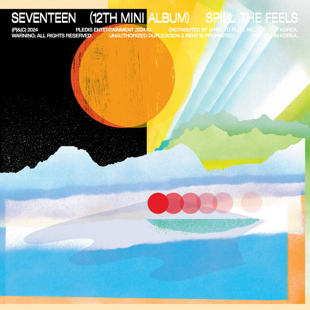
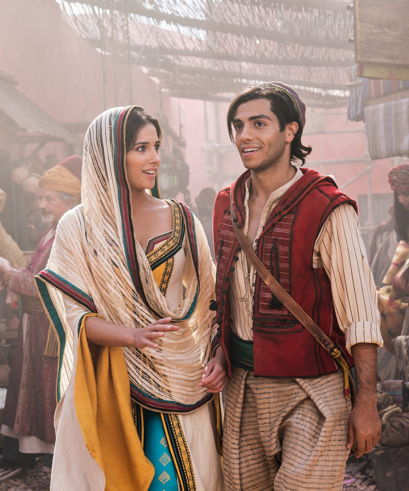

Hobbies
Sleeping

Eating
Reading
Binging or Watching
Cooking Ramen
These are the songs that lift my spirit and inspire me. Each melody carries a special memory or feeling.
Interest
Eating differen kinds of Ramen
Puzzle, Legos, and Board Games
Mountain Climbing
Fun Runs
Coding
These are the songs that lift my spirit and inspire me. Each melody carries a special memory or feeling.
Favorite Artist
Bruno Mars
Sarah Geronimo

Shawn Mendes
Lin Manuel-Miranda

IU - Lee Ji Eun
These artists have inspired my creativity and passion through their unique styles and stories.
Favorite Bands
The Juans
BTS
Seventeen
Chase Atlantic
Skillet
Delicious meals that make me feel at home! These dishes are full of flavor and memories.
Favorite Songs
Liham sa Ulap by KYLIX
Go Up by SB19
All I wanna do by Jay PARK

Candy by Seventeen
Ikaw at Ako by Klarisse & Morisette
Delicious meals that make me feel at home! These dishes are full of flavor and memories.
Favorite Movies

Aladdin
Mulan
Avengers Endgame
Maze Runners
Midnight Runners
Delicious meals that make me feel at home! These dishes are full of flavor and memories.
Favorite Series
Kian's Bizarre B&B
Assassination Classroom
Physical: 100
Alice in Borderland

Hospital Playlist
Delicious meals that make me feel at home! These dishes are full of flavor and memories.